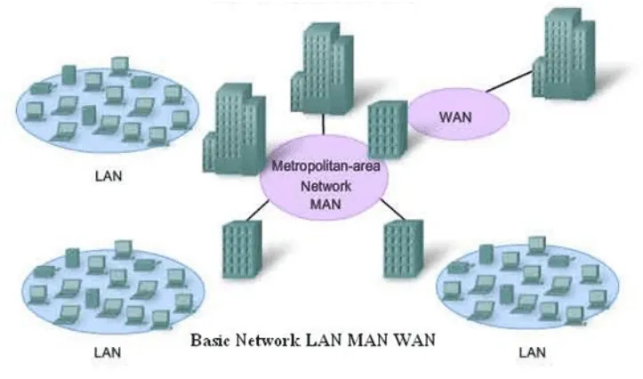

Aula 02 — Introdução a Redes de Computadores
Disciplina: 49304 — Redes de Computadores I · Sistemas de Informação — Uniube
Professor: Romualdo Mathias Filho
Semana: 2 · Semana de 03/08/2026 · [CONFIRMAR sala] · 📘 Teórica (75 min)
Página de referência: Plano de Ensino e Contrato
Responda antes de abrir. Se errar, você acabou de descobrir o que revisar hoje.
Você faltou à prova. Quantos dias úteis tem para abrir o SAE, e para quem entrega o atestado?
Três dias úteis, contados da prova perdida, e o SAE se abre no AVA. O atestado vai anexado ao SAE — quem analisa é a coordenação. Atestado entregue na mão do professor não produz efeito nenhum, e ainda queima o prazo.
A recuperação soma pontos ao que você já tinha?
Não. Ela troca. A recuperação vale os 55 pontos das provas (25 + 30) e zera as notas das duas provas, entrando no lugar delas. Com o teto de 60 na nota final, quem foi bem nas provas e mal na atividade contínua jogaria fora justamente a parte boa.
1. O que é uma rede de computadores [Teoria ⏳ 10 min]
Uma rede de computadores é um conjunto de dispositivos computacionais (hosts) interconectados de forma física ou sem fio que trocam dados e compartilham recursos de hardware e software entre si.
No cotidiano brasileiro, as redes sustentam sistemas essenciais:
- Redes domésticas (Wi-Fi): conectam smartphones, computadores, consoles e Smart TVs de forma integrada.
- Redes corporativas e bancárias: interligam agências, caixas eletrônicos e servidores centrais para processar transações em tempo real.
- Aplicativos distribuídos: WhatsApp, Zoom e iFood operam sobre redes de milhares de servidores replicados geograficamente.
- Ecossistemas de pagamento: o processamento instantâneo do Pix depende de uma malha robusta de comunicação entre o Banco Central e os bancos comerciais.
2. Classificação geográfica das redes [Teoria ⏳ 15 min]
As redes são classificadas pelo alcance físico e pela área geográfica que cobrem:
| Tipo de rede | Alcance geográfico | Exemplo prático |
|---|---|---|
| LAN (Local Area Network) | curto alcance, de metros a poucos quilômetros; ambientes restritos | a rede local de computadores de uma sala de aula da Uniube |
| WLAN (Wireless LAN) | curto alcance via ondas de rádio, sem fios | o Wi-Fi de alta densidade no saguão do campus |
| MAN (Metropolitan Area Network) | alcance metropolitano; cobre bairros ou uma cidade | a infovia da Prefeitura de Uberlândia ligando secretarias e hospitais |
| WAN (Wide Area Network) | longa distância; países, continentes ou o globo | a rede mundial de computadores — a Internet |
| VPN (Virtual Private Network) | canal lógico criptografado (túnel) sobre uma rede pública | um desenvolvedor acessando de casa, com segurança, os servidores internos da empresa |

Antes de rolar: a VPN que liga a filial de Uberlândia à matriz de São Paulo é uma LAN, uma MAN ou uma WAN?
Nenhuma das três — e todas ao mesmo tempo. A VPN não é uma classificação de alcance: é um túnel lógico criptografado que roda em cima de outra rede. Nesse caso ela trafega sobre a WAN (a Internet). Alcance e privacidade são eixos diferentes, e é por isso que a VPN aparece na mesma tabela sem ser um tamanho de rede.
3. Componentes e protocolos [Teoria ⏳ 15 min]
3.1 — Componentes físicos (hardware)
- Hosts (dispositivos finais): computadores, celulares, servidores de arquivos, câmeras IP e impressoras.
- Dispositivos intermediários:
- Switches (comutadores): conectam dispositivos dentro de uma mesma LAN (camada 2).
- Roteadores: interconectam redes diferentes e determinam o melhor caminho para os pacotes (camada 3).
- Meios de transmissão: cabo metálico par trançado (UTP Cat6), fibra óptica e o ar (rádio em 2,4 GHz e 5 GHz).
3.2 — Componentes lógicos (protocolos)
Dois protocolos da camada de transporte exemplificam a troca entre confiabilidade e velocidade:
- TCP (Transmission Control Protocol): orientado à conexão. Garante a entrega ordenada de todos os bytes, com confirmação (ACK), ao custo de mais overhead. Usado no HTTP e no e-mail.
- UDP (User Datagram Protocol): não orientado à conexão. Envia os pacotes rapidamente, sem checar se chegaram. Usado em streaming de vídeo e jogos online.
💼 Pergunta de entrevista
“Se o TCP garante a entrega e o UDP não, por que alguém escolheria UDP?” — Porque a garantia custa tempo. Retransmitir um pacote de vídeo que já passou não adianta nada: quando a retransmissão chegar, aquele quadro já não é mais o quadro atual. Em tempo real, chegar tarde e chegar errado são a mesma coisa.
4. A jornada dos dados [Teoria ⏳ 10 min]
Ao acessar um site como google.com.br, o navegador executa um fluxo automatizado:
- Resolução de nomes (DNS): a URL legível é enviada a um servidor DNS para ser traduzida no endereço IP correspondente.
- Encapsulamento e transporte: os dados da página são divididos em pacotes formatados segundo HTTP/HTTPS e empacotados em segmentos TCP/IP.
- Encaminhamento e roteamento: os pacotes trafegam pelos meios físicos, passando por roteadores e switches no provedor (ISP) até chegar ao servidor final.
- Reconstrução: o navegador do host receptor organiza os pacotes, processa o HTML/CSS e exibe a página.
Duas perguntas de múltipla escolha sobre classificação de redes: dado um cenário, qual é LAN, qual é WAN e onde entra a VPN. Anônimo, sem cadastro.
Plano B: se a rede cair, as mesmas duas perguntas vão na mão, com voto por levantada de dedos. Mesmo conteúdo, mesmo tempo.
5. Prática: o comando ping [Hands-On ⏳ 15 min]
O utilitário ping envia pacotes ICMP do tipo Echo Request para um host de destino e aguarda um Echo Reply. É a ferramenta mais rápida para verificar conectividade.
Disparando google.com [142.250.78.238] com 32 bytes de dados: Resposta de 142.250.78.238: bytes=32 tempo=12ms TTL=118 Resposta de 142.250.78.238: bytes=32 tempo=11ms TTL=118
- No Windows, pressione
Win + R, digitecmde aperteEnter. - Execute
ping google.come observe a primeira linha: ela mostra o IP que o DNS devolveu. - Execute
ping 8.8.8.8— agora sem nome nenhum, só endereço. - Anote o tempo (RTT) e o TTL dos dois testes e compare.
Critério de pronto: você consegue dizer qual dos dois comandos usou DNS e qual não usou, e explicar por que os dois devolvem tempos parecidos.
⚠️ Gotcha
pingque falha não significa host fora do ar. Muitos servidores e firewalls corporativos bloqueiam ICMP por política. Opingprova que respondeu; o silêncio dele não prova o contrário.
| Conceito | Definição em uma frase |
|---|---|
| Rede de computadores | dispositivos interconectados, com ou sem fio, para trocar dados e compartilhar recursos |
| LAN | rede de área geográfica restrita, como um escritório ou o campus |
| MAN | rede de alcance metropolitano, cobrindo bairros ou uma cidade |
| WAN | rede de longa distância; a Internet é o exemplo máximo |
| VPN | túnel criptografado que roda sobre uma rede pública — não é tamanho, é privacidade |
| TCP | transporte com entrega ordenada e confirmada, ao custo de overhead |
| UDP | transporte rápido, sem confirmação de entrega |
ping | utilitário ICMP que testa conectividade e mede o tempo de ida e volta |
A VPN aparece na mesma tabela que LAN, MAN e WAN, mas não é um tamanho de rede. Se ela não classifica por alcance, por que ainda assim faz sentido ensiná-la junto das outras? O que ela tem em comum com elas que justifica estarem na mesma lista?
- TANENBAUM, A. S.; FEAMSTER, N.; WETHERALL, D. J. Redes de Computadores. 6. ed. São Paulo: Pearson, 2021. cap. 1, p. 10–55 — definições de LAN, MAN e WAN.
- KUROSE, J. F.; ROSS, K. W. Redes de computadores e a Internet: uma abordagem top-down. 8. ed. São Paulo: Pearson, 2021. cap. 1, p. 2–35 — a rede e seus componentes.
- STALLINGS, W. Data and Computer Communications. 10th ed. Pearson, 2013. chap. 1, p. 15–40
Hoje você classificou redes pelo tamanho e viu que elas trocam pacotes. Na próxima, a pergunta muda de escala: com que formato físico esses pacotes viajam, e por que o desenho do cabeamento decide se a rede inteira cai quando um único ponto falha.